Что это. Список правок к макетам по Вашему письму от 05.10 («это не призыв к действию, это обсуждение, именно предложения на расмотрение профессионалов»). Дизайн целиком не перерисовываем, речь о точечных акцентах. Тексты на всех картинках этой вкладки рабочие, из макета дизайнера; финальные тексты берутся из драфтов. По каждому пункту: что сейчас в макете, что предлагаем и что нужно от Вас.
Основа: макеты главной, раздела Zoll- & Steuerlager и страницы Steuerlager Alkohol в том виде, в каком мы прислали их Вам 02.09 (сверено с рабочим файлом дизайнера 12.10, изменений нет).
Как дальше: на созвоне проходим пункты по порядку. После Вашего письменного «да» лист уходит дизайнеру. Без Вашего подтверждения в макетах ничего не меняем.
1Bio и EcoVadis убираем
Было в макетах до правок
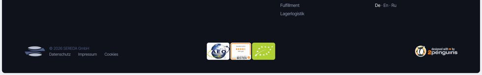
Подвал, все три макета: справа в ряду знаков зелёный знак Bio.
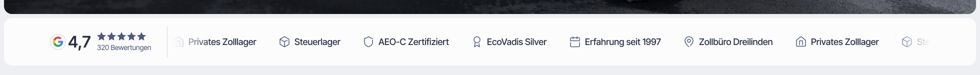
Полоса доверия под первым экраном, все три макета: пункт «EcoVadis Silver».
Решено (обновлено 19.10)
Знак Bio из подвала убираем на всех макетах, это Ваше требование от 05.10. Наша ошибка была в том, что 02.09 мы написали, что Bio убран из всех материалов, а в макетах он остался.
EcoVadis на сайте не показываем: ни в полосе доверия, ни в подвале. Раньше на этой странице мы предлагали вернуть его с Вашим уровнем; после созвона 13.10 решили его не показывать.
Ваше письмо от 05.10: «из вашего проекта нужно убрать!»
Нужно от Вас: ничего.
2Тёплый акцентный цвет для главного действия
Предлагаем, два оттенка на выбор
Терракота #B5532E · наш вариант
Anfrage stellen☎ Anrufen
Anfrage stellen
Белый текст на кнопке: контраст 4,95 : 1 (норма для текста от 4,5 : 1).
Кармин #A61C3C · ближе к Вашей визуализации
Anfrage stellen☎ Anrufen
Anfrage stellen
Белый текст на кнопке: контраст 7,36 : 1.
Акцент только на главных кнопках («Anfrage», звонок) и одной-двух ключевых метках, не как украшение. Основные цвета макета остаются.
Почему мы за терракоту: красный на таможенном сайте легко читается как «ошибка» или «стоп», а это та тревога, с которой к Вам приходит клиент. Кроме того, красный у одного из заметных конкурентов фирменный цвет.
На тёмно-синих блоках кнопка любого из двух оттенков сливается с фоном, поэтому там она получает белую обводку (на образцах выше, тёмная полоса).
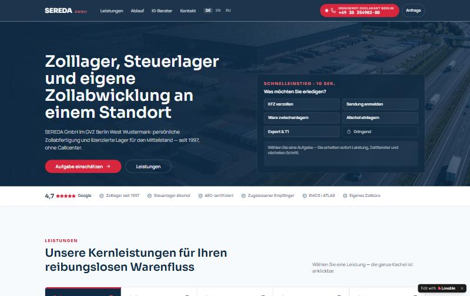
Ваша визуализация: красный акцент на кнопке и плашке в шапке.
Ваше письмо от 05.10: не хватает сочного контраста, «например, кармина или теплой терракоты», и Ваш ответ от 07.10, что тёплая терракота тоже была у Вас на рассмотрении.
Нужно от Вас: выбор оттенка. Дизайнер затем выставит его во все макеты.
3Телефон сразу на виду
Сейчас в макетах
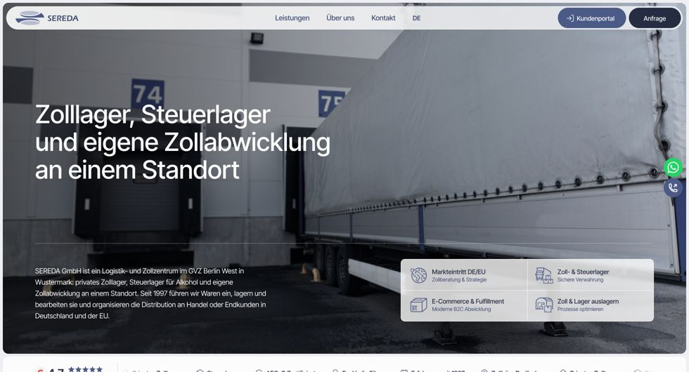
Компьютер: в шапке только «Kundenportal» и «Anfrage», телефон маленьким значком сбоку.
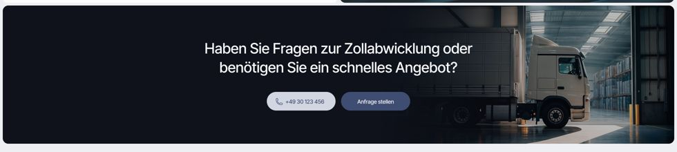
Тёмный блок с призывом: номер стоит, но это пока заглушка.
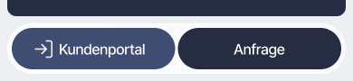
Телефон: в нижней панели «Kundenportal» и «Anfrage», кнопки звонка нет.
Предлагаем
Компьютер: номер цифрами в шапке рядом с «Anfrage» и в каждом тёмном блоке с призывом.
Телефон: кнопка «Anrufen» в нижней панели рядом с «Anfrage», всегда под рукой.
Кнопка звонка в акцентном цвете из пункта 2.
Подпись без слов «дежурный» или «24 часа»: 22.08 Вы написали, что безусловное обещание «24 Stunden» не используем. Рядом с номером указываем реальные часы.
Ваше письмо от 05.10: в срочной ситуации клиенту нужен мгновенно заметный прямой номер.
Нужно от Вас: какой номер ставим как прямой для срочных случаев (центральный, отдельная линия таможенников или бюро Dreilinden), в какие часы по нему отвечают и нужна ли кнопка WhatsApp (с каким номером).
4Карточки и две колонки вместо мелких списков
Сейчас в макетах
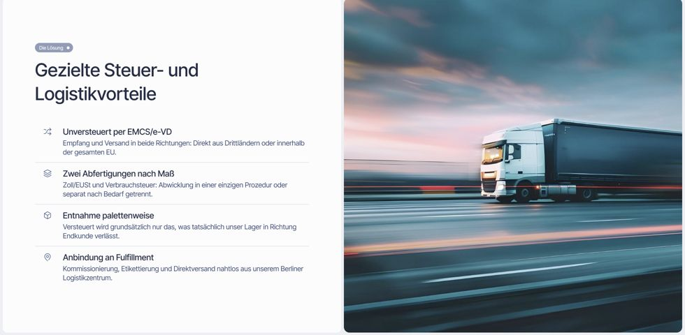
Steuerlager Alkohol: «Gezielte Steuer- und Logistikvorteile» списком с мелким текстом.
Преимущества: карточки, в каждой иконка, заголовок в два-четыре слова и одна строка. Подробности уходят в вопросы и ответы и в описание процесса.
Рамки: две колонки. На созвоне 01.09 Вы предложили сделать этот блок «право-лево»: с одной стороны, что мы можем, с другой, что не наше; как вариант называли и деление «слева Zolllager, справа Steuerlager». Берём первый вариант. Подписи предлагаем такие: «✓ Das übernehmen wir» и «– Das läuft nicht über uns bzw. nur über Partner». Короткими метками; остаются только пункты, которых нет в других местах страницы.
Тексты в этих блоках сокращаем в драфтах после Вашего «да» на порядок блоков.
Ваше письмо от 05.10: «В B2B их будут «сканировать» по диагонали за 3–5 секунд».
Нужно от Вас: «да».
5Быстрый выбор задачи в первом экране
Сейчас в макете главной
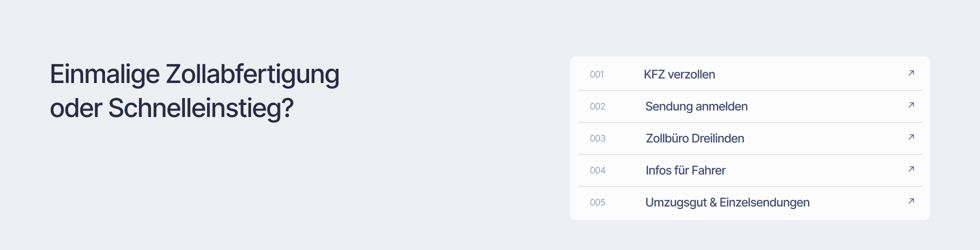
В первом экране четыре мелкие карточки разделов, они читаются как навигация, а не как выбор задачи. Быстрые ссылки стоят под первым экраном, списком.
Ваша визуализация
«Was möchten Sie erledigen?» прямо в первом экране.
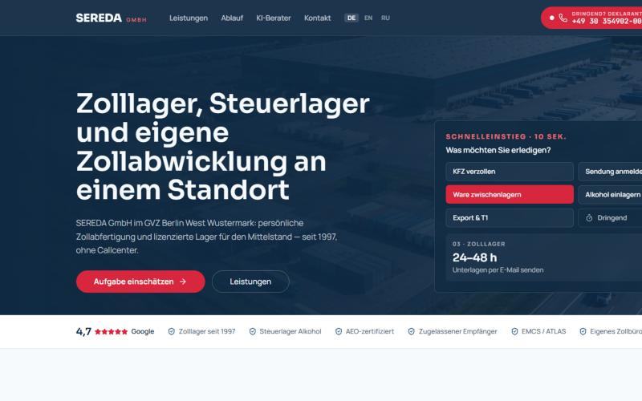
После нажатия: карточка с услугой и следующим шагом.
Предлагаем
Берём Вашу механику: в первом экране главной вопрос «Was möchten Sie erledigen?» и несколько кнопок; по нажатию человек сразу видит подходящую услугу и следующий шаг.
Набор кнопок согласуем с Вами. Пять прямых входов для разовых оформлений (блок «Schnellwege für Einmalkunden» под первым экраном), как Вы решили 17.08 и уточнили 22.08, остаются. Основа: Ваше правило маршрутов из письма от 05.10 (общий складской запрос → Lagerlogistik, отраслевой Food → Food & Beverage) и наше дополнение к нему: хранение без уплаты пошлин → Zolllager. В Вашей визуализации кнопка «Ware zwischenlagern» ведёт на Zolllager; по этому правилу обычное хранение ведёт на Lagerlogistik, а Zolllager остаётся для товара, по которому пошлины ещё не уплачены.
В карточке только сроки, которые Вы подтвердили (например, «In Standardfällen melden wir uns innerhalb von 3 Arbeitsstunden»), без «24 часов».
На разделах и страницах услуг по две-три кнопки перехода в первом экране.
Набросок первого экрана главной: наше предложение, на Ваше «да». Набор кнопок можно менять.
Zolllager, Steuerlager und eigene Zollabwicklung an einem Standort
Was möchten Sie erledigen?
Nach Deutschland/EU liefernWare unverzollt einlagernAlkohol unversteuert lagernWare lagern und bearbeitenLebensmittel an den Handel liefernOnline-Handel und Marktplätze
Zolllager: Ihre Ware bleibt unverzollt, bis Sie sie brauchen. Nächster Schritt: Anfrage stellen · Mehr zum Zolllager
Кнопка
Ведёт на
Основание
Nach Deutschland/EU liefern
Markteintritt DE/EU
Ваш список девяти страниц (05.10)
Ware unverzollt einlagern
Zolllager
наше дополнение к Вашему правилу: хранение без уплаты пошлин
Alkohol unversteuert lagern
Steuerlager Alkohol
Ваш список девяти страниц (05.10)
Ware lagern und bearbeiten
Lagerlogistik
Ваше правило 05.10: общий складской запрос → Lagerlogistik
Lebensmittel an den Handel liefern
Food & Beverage
Ваше правило 05.10: отраслевой Food → Food & Beverage
Online-Handel und Marktplätze
Fulfillment DE + EU
Ваш список девяти страниц (05.10)
Разовые оформления (KFZ, Sendung anmelden, Dreilinden, Fahrer, Umzugsgut) остаются отдельным блоком под первым экраном, как Вы решили 17.08 и уточнили 22.08, поэтому в этом наборе их нет. Кнопка «Dringend» из Вашей визуализации: только если будет прямой номер (пункт 3). Текст в карточке без сроков, кроме подтверждённых Вами.
Нужно от Вас: «да» на механику и на набор кнопок (набросок выше; кнопки можно менять).
6«AEO-F» исправляем на «AEO-C»
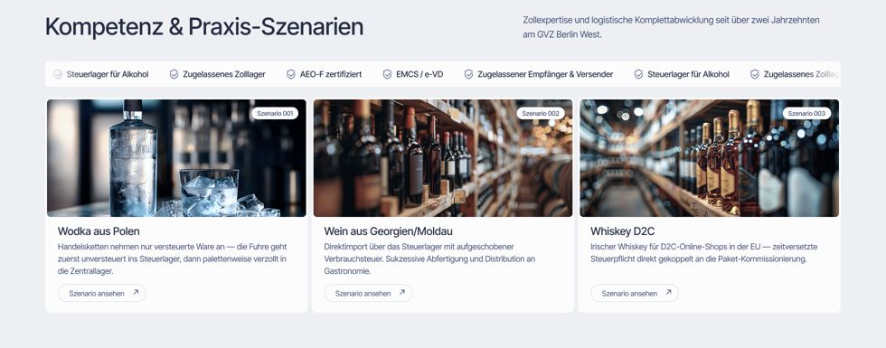
Steuerlager Alkohol, полоса над сценариями: «AEO-F zertifiziert».
Это наша ошибка в макете: у Вас статус AEO-C. Исправляем.
Тексты сценариев на этой картинке рабочие, из макета дизайнера («verzollt» у водки из Польши, «aufgeschobene Verbrauchsteuer» у вина). В макет пойдут тексты из драфта страницы, где эти места уже сверены с источниками (см. вкладку «Formulierungen & Quellen», № 10). Это касается всех текстов на картинках этой вкладки: в макетах они рабочие, финальные тексты берутся из драфтов.
7Синий блок на главной
Ваше предложение с созвона 01.09: синий блок переставить выше, после «Ablauf». Это блок 6 «Kontaktaufruf» с призывом связаться (на образцовой странице сейчас после кейса). Принимаем: ставим его сразу после «Ablauf», перед кейсом. На макете покажем вместе с новым первым экраном (пункт 5), чтобы ритм главной был виден целиком.
Порядок блоков главной: сейчас и с Вашим предложением 01.09
Сейчас (образцовая страница)
Titelbereich
Zulassungen & Vertrauen
Schnellwege für Einmalkunden
Ablauf: alles aus einer Hand
Kundenfall
Kontaktaufruf (синий блок)
Leistungen
Google-Bewertungen
Häufige Fragen
Ansprechpartner & Formular
Предлагаем
Titelbereich + быстрый выбор пункт 5
Zulassungen & Vertrauen
Schnellwege für Einmalkunden
Ablauf: alles aus einer Hand
Kontaktaufruf (синий блок) выше, пункт 7
Kundenfall
Leistungen
Google-Bewertungen
Häufige Fragen
Ansprechpartner & Formular
Нужно от Вас: «да» вместе с порядком блоков образцовой страницы. 01.09 Вы предложили поставить этот блок после «Ablauf» и оставили решение нам.
8KI-Zollberater
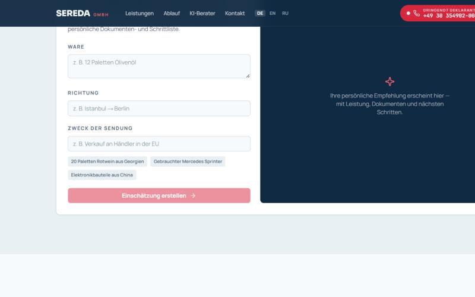
Ваша визуализация: «KI-Zollberater».
KI-Zollberater из Вашей визуализации в объём проекта не входит, к запуску его не делаем: автоматический совет по таможне без проверки человеком может навредить клиенту и Вам. Если захотите позже, посчитаем отдельно.
Нужно от Вас: ничего.
9Разделы (хабы): новые блоки по схеме Content-Vorlagen
В письме от 05.10 Вы просили, чтобы у каждого хаба были «собственные сценарии, содержание, карточки и переходы». Для макета раздела Zoll- & Steuerlager предлагаем так:
после витрины подразделов новый текстовый блок «Leistungen im Überblick» (какие услуги входят в раздел, со ссылками);
карточка «Warum beides bei uns» стоит отдельно, сразу перед блоком с допусками (сейчас она четвёртой карточкой в витрине);
новый блок «Szenarien»: две-три типичные ситуации клиентов раздела, тем же элементом, что сценарии на странице Steuerlager Alkohol, без нового дизайна.
Порядок блоков такой же, как в Content-Vorlagen (тип 2). Утверждаете его в пункте «порядок блоков» на созвоне.
Раздел Zoll- & Steuerlager: порядок блоков по Content-Vorlagen (тип 2). Зелёная рамка: новый блок; жёлтая метка: переставлен.
1 · Заголовок и прямой ответ: что входит в раздел и для кого
2 · Витрина подразделов (карточки со ссылками)
3 · Leistungen im Überblick новое
4 · Warum beides bei uns отдельно, а не четвёртой карточкой витрины
5 · Допуски и доверие
6 · Szenarien: 2–3 ситуации клиентов раздела новое, тем же элементом, что на Steuerlager Alkohol
7 · Промежуточное обращение
8 · Процесс
9 · Условия и рамки
10 · Смежные услуги
11 · Отзывы · 12 · Вопросы и ответы · 13 · Контакт
По этому же шаблону строятся Zollabwicklung, Food & Beverage и Fulfillment, каждый со своими сценариями, карточками и переходами (Ваше требование 05.10).
Договорились на созвоне 01.09 · войдёт в тот же лист дизайнеру
Эти пункты мы обсудили с Вами 01.09. Дизайнер получит их одним пакетом вместе с пунктами выше, чтобы макеты правились один раз:
Полоса доверия на каждой странице своя: состав и порядок пунктов Вы меняете сами; иконки из небольшого общего набора.
Google-отзывы: на карточке имя, текст, месяц и год.
Переключатель языков текстом, без флагов.
Карточки услуг кликабельны целиком и кнопкой; на телефоне раскрываются, как аккордеон.
Анимации по минимуму, приоритет скорости страницы; для телефона ищем вариант, который выглядит интересно и не замедляет страницу (Ваша просьба 01.09).
Наши правки к макету по утверждённой структуре страниц (не решения созвона, на Ваше «да»):
Шаги блока «Ablauf» без ссылок на другие страницы: это наше предложение, переходы даёт блок услуг ниже. 01.09 Вы спрашивали, можно ли дать в шаге ссылку, например на склад: технически можно. Решим на созвоне.
Google-отзывы: три карточки вместо четырёх.
Steuerlager Alkohol: в первом экране одна строка доверия вместо полной полосы; блок «Grundlagenwissen Steuerlager» с пояснениями (что такое Steuerlager, акцизы, EMCS), переходы на другие услуги отдельным блоком.
Где оставлять замечания по дизайну: ответом на письмо или на созвоне. Кнопка «✏️ Vorschlag» на образцовой странице относится только к текстам и порядку блоков.
Технически, без решения с Вашей стороны: в полосе доверия макета стоит «320 Bewertungen», это заглушка. На сайте число и оценка подтягиваются из Вашего профиля Google автоматически (сейчас 134 отзыва, средняя оценка 4,7). Доступ к профилю у нас есть, спасибо за приглашение.
Что нужно от Вас на созвоне
Пункты 4 и 9: «да» (пункт 9 вместе с порядком блоков). Пункт 6 исправляем без вопросов. Пункт 1: Bio и EcoVadis убираем, от Вас ничего не нужно (обновлено 19.10).
Наши правки к макету (шаги «Ablauf» без ссылок, отзывы, Steuerlager Alkohol): «да».
Пункт 2: выбор оттенка.
Пункт 3: прямой номер для срочных случаев, часы и кнопка WhatsApp.
Пункт 5: «да» на механику и набор кнопок.
Пункт 7: «да» вместе с порядком блоков (синий блок после «Ablauf», Ваше предложение 01.09). Пункт 8: ничего.
После созвона пришлём протокол. Как только Вы его подтвердите письменно, лист уходит дизайнеру.